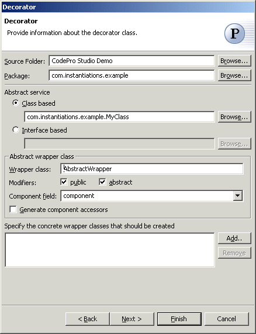
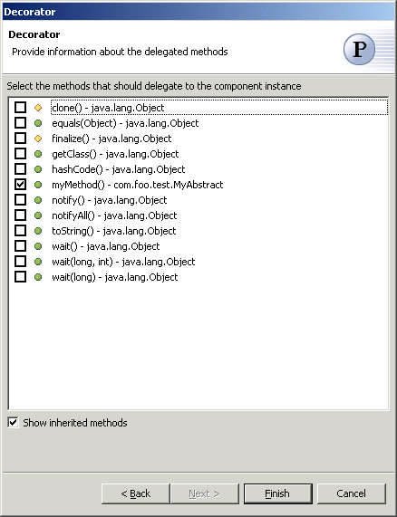

Decorator Pattern
Also known as: Wrapper
The  Decorator Pattern attaches additional responsibilities to an object dynamically.
Decorators provide a flexible alternative to subclassing for extending functionality.
Decorator Pattern attaches additional responsibilities to an object dynamically.
Decorators provide a flexible alternative to subclassing for extending functionality.
Wizard

| Option | Description | Default |
| Source folder | Enter a source folder for the new class. Either type a valid source folder path or click Browse to select a source folder via a dialog. | The source folder of the element that was selected when the wizard was started. |
| Package | Enter a package to contain the new class. Either type a valid package name or click Browse to select a package via a dialog. | The package of the element that was selected when the wizard was started. |
| Abstract service | Type or click Browse to select a superclass for the abstract wrapper class. Alternatively, select an interface for the abstract wrapper class to implement. | <java.lang.Object> |
| Wrapper class | Type a name for the new wrapper class. | <AbstractWrapper> |
| Modifiers | Select one or more access modifiers for the new class.
|
public, abstract |
| Component field | Type or select the name of the field that will contain the component instance | <component> |
| Generate component accessors | Determines whether accessors are created for the component field. | <false> |
| Interfaces | Click Add to enter the names of the concrete wrapper classes that should be created | <blank> |

| Option | Description | Default |
| Delegated methods | Select the methods that should delegate to the component instance | <blank> |
Applicability
Use Decorator
- to add responsibilities to individual objects dynamically and transparently, that is,
without affecting other objects.
- for responsibilities that can be withdrawn.
- when extension by subclassing is impractical. Sometimes a large number of independent extensions are possible and would produce an explosion of subclasses to support every combination. Or a class definition may be hidden or otherwise unavailable for subclassing.
Additional Resources
http://c2.com/cgi/wiki?DecoratorPattern
http://www.cmcrossroads.com/bradapp/javapats.html#Decorator